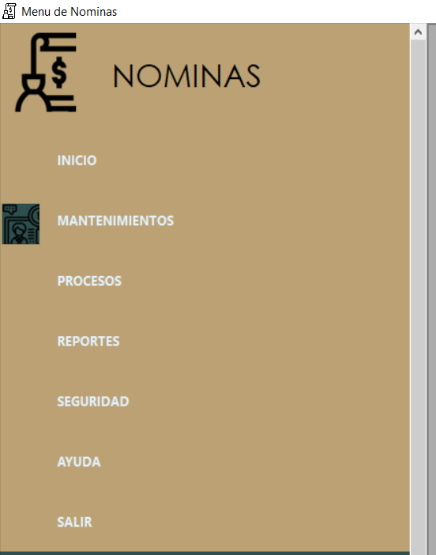
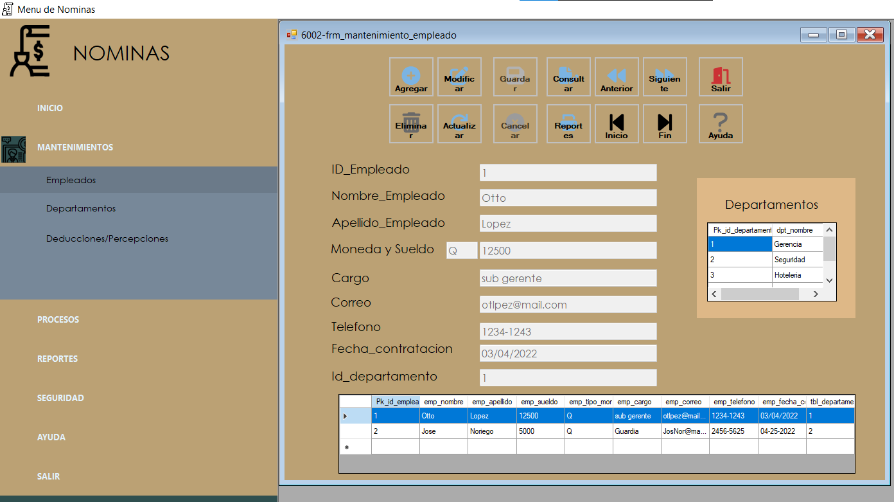
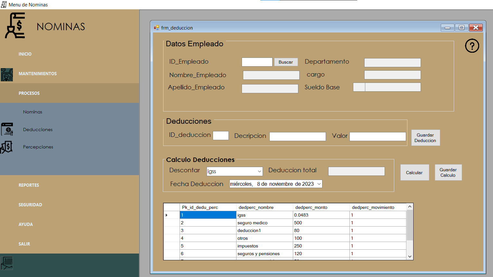

Ayuda Menu Nominas


En este menu podemos observar como se divide el menu de Nominas el contenido y finalidad de cada boton.
En este apartado podran observar cada uno de los Mantenimientos disponibles, para ingresar a uno solo se debe seleccionar primero donde dice "Mantenimientos" y luego alguna de las opciones que aparecen disponibles.
En este apartado se puede acceder a los diversos procesos disponbiles para Nominas como percepciones, deducciones y la nomina en si, de igual manera para poder ingresar a uno de ellos primero se debe presionar el boton que dice "procesos" y luego seleccionar alguna de las opciones disponbiles
